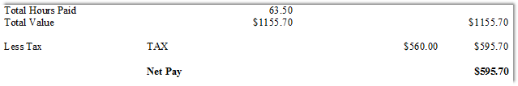
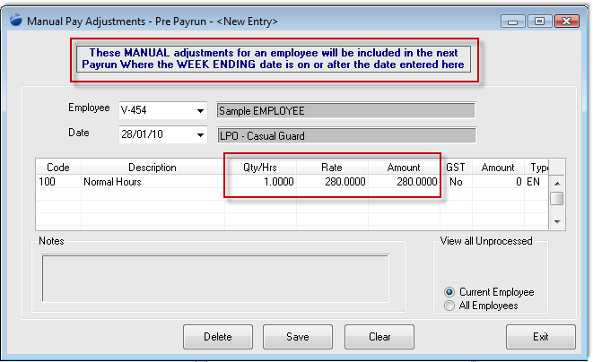

Home
Tutorial
Issue
Please investigate the issue for employee V-454 (Sample Employee). In her first payrun she has been taxed 50%. The tax table in her profile was blank, however her TFN was correct
Can you please advise how to make an adjustment for her for her next pay.
|
Getting There:
[ N/A ]
|
Introduction
The payslip in error is below, showing a tax value of $595.70.

Step 1 - what should she have been paid?
The quickest and most direct way to find what tax an employee should have paid is by using the ATO's actual tax scales - found at:
ATO web site "Tax Tables 2009/10 complete list".
Top of Page
Step 2 - make a manual adjustment to correct the pay
As an example of the adjustment, we'll assume that the employee was overtaxed by $280.00, therefore you want to create an adjustment for that amount. Using the pre-payroll manual adjustments screen, enter the data as per the below example:

This screen can be used at any time, and as the header says - the adjustment will be made in the next payrun for the employee.
The above screen can be found at: [ Nav ] –> Payroll / Pre-payroll Manual Adjustments
Step 3 - next payrun
To ensure that this employee has no issues at the next payrun, her pay should be double-checked to check that the adjustment has come though and that the correct rate of tax on the new total amount has been calculated.
Summary
Top of Page
See Also
 PowerForce Controls PowerForce Controls
|